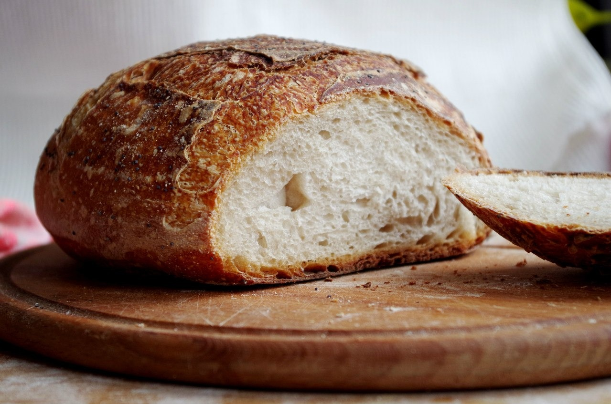

В нашей семье всегда пекли хлеб дома. Прабабушка, бабушка и мама, все они искустно владеют даром превращения муки и воды в разного рода вкусности) Однажды попробовав невероятно вкусный хлеб, приготовленный в домашней хлебопечке, решил что и себе хочу. В тот же день купил и начались мои эксперементы с выпечкой хлеба. Конечно с первого раза идеально не получилось, но со временем поигравшись с пропорциями муки, воды и дрожжей результат превзошел все ожидания.
Казалось бы, что там такого, ну научился выпекать хлеб и что дальше. А дальше безчисленное количество рецептов и каждый из них это новый вызов, новый эксперимент. Результат которого мягкий, ароматный и вкусный хлебушек...
Вот так выпечка хлеба стала моим хобби.